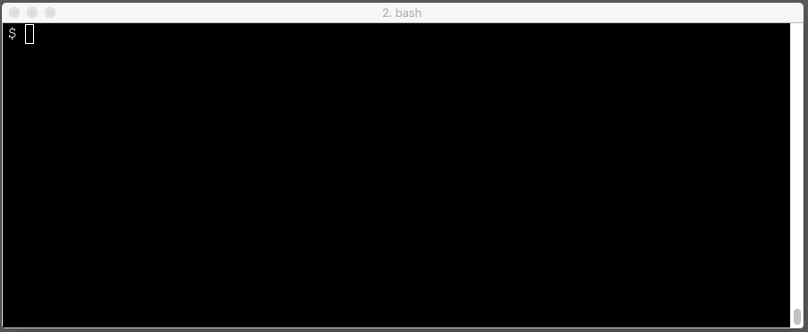
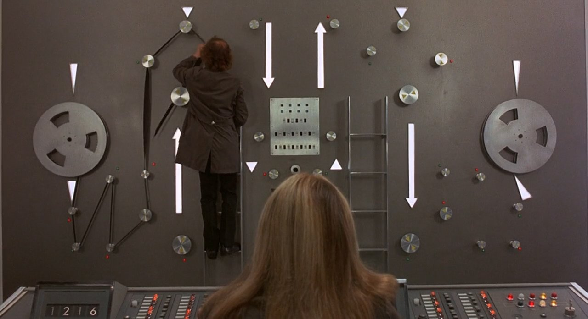

class: center, middle ## Perl 6: ## Superglue for the 21st Century #### by<br>Brian Duggan <span class='github'> <small><span class='github'><img src='./github.svg'>bduggan</span> <br>bduggan@matatu.org <br>irc: bdmatatu </span> <a href="http://promptworks.com"><img src="promptworks-logo.png"></a> --- class: center, middle count: false background-image: url(gears-background.png) <h2>.simple[We craft software for companies that care about the details.]</h2> <a href="http://promptworks.com"><img src="promptworks-logo.png"></a> --- ## Superglue for the 21st century. --- ## The 21st century. ```nuthin Sale,06/08/2017,06/11/2017,EL POQUITO,-93.12 Sale,06/18/2017,06/19/2017,COSI, INC. 173,-18.21 ``` Example of a CSV file I recently download from my bank. -- Notice anything strange? -- In the 20th century, we thought commas had to be escaped. Not so. This is actually unambiguous. Escaping isn't necessary. But CSV parsing libraries won't handle it. --- ## The 21st century. ``` Sale,06/08/2017,06/11/2017,EL POQUITO,-93.12 Sale,06/18/2017,06/19/2017,COSI, INC. 173,-18.21 ``` Every line looks like this: ``` <type> ',' <date> ',' <date> ',' <description> ',' <amount> ``` --- ## The 21st century. ``` Sale,06/08/2017,06/11/2017,EL POQUITO,-93.12 Sale,06/18/2017,06/19/2017,COSI, INC. 173,-18.21 ``` ```perl6 grammar CSV { rule TOP { <line>+ % "\n" } regex line { <type> ',' <date> ',' <date> ',' <description> ',' <amount> } token type { <[A..Z]> <[a..z]>+ } # capitalized word token date { <[/0..9]>+ } # digits, slashes token amount { <[-.0..9]>+ } # digits, dot, minus regex description { \V+ } # non-vertical space } ``` ??? regexes, tokens, rules? regexes require backtracking. tokens do not. rules do not either. Rules also turn spaces into whitespace tokens (in this case they allow whitespace at the end). --- ## The 21st century. ``` Sale,06/08/2017,06/11/2017,EL POQUITO,-93.12 Sale,06/18/2017,06/19/2017,COSI, INC. 173,-18.21 ``` ```perl6 CSV.parse(q:to/DONE/); Sale,06/08/2017,06/11/2017,COSI, INC. 173,-18.21 Sale,06/08/2017,06/11/2017,EL POQUITO,-93.12 DONE ``` -- ```perl6 say "On { .<date>[0] }, I spent { -.<amount> } at {.<description>}." for $<line>; ``` ``` On 06/08/2017, I spent 18.21 at COSI, INC. 173. On 06/08/2017, I spent 93.12 at EL POQUITO. ``` -- .lang-notes[ * `$/` is the match object (set by `parse`). * `$<line>` is the same as `$/<line>`. * `for` puts each line into `$_` (the topic variable). * `.<date>` is the same as `$_.<date>`, or `$_<date>`. ] ??? `.<date>` is the post-circumfix hash access operator in method notation. --- ## The 21st century. * Data is as messy as ever. * But regular expressions don't have to be. * They are a first class language in Perl 6. * Grammars are practical solutions for messy data. * See docs.perl6.org/routine/parse for another CSV example. --- ## Outline <ul style='list-style-type:none;' > <li>✓ Grammars <span class='service'>my bank</span> <li>● qx, shell, run <span class='service'>AWS</span> <span class='service'>Github</span> <li>● Proc::Async <li>● Supplies <span class='service'>Jenkins</span> <li>● Testing </ul> --- layout: true .footer[ ✓ Grammars ● qx, shell, run ○ Proc::Async ○ Supplies ○ Testing ] --- ## qx, shell, run * `qx` runs a command and returns the output. * `shell` runs a command using `/bin/sh`. * `run` runs a command. * Both `shell` and `run` return a `Proc`. --- .top-right[.service[aws]] ## qx <small> ``` $ aws s3 ls s3://incoming.data.bucket/incoming/data/ ``` ``` 2017-01-24 12:55:36 0 PRE special-files/ PRE more-special-files/ 2017-01-24 12:59:55 14214 Acme Inc._Pi-12-05-12-12-34.json 2017-01-24 12:59:55 93802 Super Co-11-28-02-14-25.json ``` </small> Let's classify these (files vs dirs) and turn them into arrays. -- ```perl6 given qx{aws s3 ls s3://incoming.data.bucket/incoming/data/} .lines[1..*] .map( { .trim } ) .classify: { /^^ 'PRE'/ ?? 'dir' !! 'file' } { @dirs = .<dir>.map: { .split(/ \s+ /, 2) } @files = .<file>.map: { .split(/ \s+ /, 4) } } ``` --- .top-right[.service[github]] ## shell, run ```perl6 indir('my-git-repo', { shell "git log --format='* %s' HEAD..github/master > changes"; shell "hub pull-request -F changes"; }) ``` .lang-notes[ * Run commands in a directory, fail if anything goes wrong.<br> * Failures in sink context become exceptions. ] -- ```perl6 my $proc = run '/bin/cat', :in, :out; $proc.in.say("meow"); say $proc.out.get(:slurp); ``` -- ``` meow ``` .lang-notes[ * `run` and `shell` don't always wait for the `Proc` to finish. * But there's a better way to do asynchronocity. ] ??? But, there is a better way to be asynchronous. --- layout: true .footer[ ✓ Grammars ✓ qx, shell, run ● Proc::Async ○ Supplies ○ Testing ] --- ## Proc::Async ```perl6 my $proc = Proc::Async.new('/bin/cat', :w, :out); ``` -- ```perl6 $proc.stdout.tap: -> $word { say "The cat says $word." }; ``` -- ```perl6 my $promise = $proc.start; $proc.say: 'meow'; $proc.close-stdin; await $promise; ``` -- ``` The cat says meow. ``` -- .lang-notes[ 1. Make an object. 2. Set up taps on `stdout` (or `stderr`). 3. Make a promise (start the process). 4. Interact. 5. Close file stdin when done. 6. Await the promise. ] ??? Let's look closer at just the tapping portion. --- layout: true .footer[ ✓ Grammars ✓ qx, shell, run ✓ Proc::Async ● Supplies ○ Testing ] --- ## Supplies ```perl6 $proc.stdout.tap: -> $word { say "The cat says $word." }; ``` -- ```perl6 start react whenever $proc.stdout -> $word { say "The cat says $word." } ``` .lang-notes[ * These are similar. * `start` schedules code on another thread. * `react` waits for supplies to be done. * `whenever` sets up a tap on a Supply. ] ??? `$proc.stdout` is a Supply.<br> There's more than one way to tap a Supply. `react` waits for a supply to be done. --- ## Supply chain ```perl6 my $sentences = supply { * whenever $proc.stdout.words -> $word { emit "The cat says $word"; } } ``` ```perl6 my $exclamations = supply { * whenever $sentences -> $s { emit $s.uc ~ '!' } } $exclamations.tap: *.say; ``` ```perl6 THE CAT SAYS MEOW! ``` .lang-notes[ * `supply` makes a new Supply. * `emit` emits a value for the supply. * `proc.stdout`→ `.words` → `$sentences` → `$exclamations`. ] ??? `supply` make a supply from a block.<br> `emit` within the block, emits a value from the supply. --- ## Log filtering .top-right[.service[Jenkins]] <img src='before.gif' style='width:100%;'> Even in the 21st century, logs sometimes look like this. --- ## Log filtering * Long running process. * Logs are verbose but have some useful information. * Messages may have newlines. * Want to filter by message, not by line. * Supplies to the rescue! * Use Proc::Async to start a process. * Set up a chain of supplies to group by message. --- ## Log filtering ```perl6 my $p = Proc::Async.new(|@args, :err); my $log-messages = supply { whenever $p.stderr.lines { state $last = ""; if /^ [ 'DEBUG' | 'INFO' | 'ERROR' | 'WARNING' ] / { emit $last if $last; $last = ""; } $last ~= "$_\n"; QUIT { emit $last if $last; } LAST { emit $last if $last; } } } ``` Step 1: Turn lines into messages. * Keep a buffer, emit when you hit a boundary. * Emit any remaining stuff at the end. --- ## Log filtering ```perl6 my $filtered = supply { whenever $log-messages { when / 'task' $<name>=(\V+) 'has status' $<status>=(\V+) / { emit "$<status> : $<name>"; } when / 'DEBUG' / { ... } when / 'Running Worker' / { ... } when / 'Checking if' / { ... } when / 'Validating' / { ... } } } ``` Step 2: Add filtering rules. * `when` is like `if`, but leaves the block. --- ## Log filtering ```perl6 $filtered.tap: *.say; await $proc.start; ``` * Step 3: Tap filtered messages. Start the process. --- ## Log filtering ```perl6 print "\e[?25l"; # turn off cursor Supply.interval(0.1).tap: { print <\ | / ->[$_ % 4]; print "\r"; } ``` Step 4: Make an ASCII art spinner. .lang-notes[ * `Supply.interval(N)` makes a new supply. * This supply emits the next number every N seconds. * `<\ | / ->` makes `('/', '|', '/', '-')` ] --- ## Log filtering ### before: <img src='before.gif' style='width:100%;'> --- ## Log filtering ### after:  --- layout: true .footer[ ✓ Grammars ✓ qx, shell, run ✓ Proc::Async ✓ Supplies ● Testing ] --- ## Testing ```perl6 my @calls; &shell.wrap(sub (|args) { @calls.push: args; } ); shell 'rm -rf /'; shell 'sleep 10000'; use Test; plan 2; is @calls[0], 'rm -rf /', 'called rm -rf /'; is @calls[1], 'sleep 10000', 'called sleep 10000'; ``` ``` 1..2 ok 1 - called rm -rf / ok 2 - called sleep 10000 ``` .lang-notes[ * Use `wrap` to mock. * Works fine with `shell` or `run`. * Wrap `QX` to wrap `qx` and `qqx` ] --- layout: true .footer[ ✓ Grammars ✓ qx, shell, run ✓ Proc::Async ✓ Supplies ✓ Testing ] --- ## Conclusion * The 21st century is weird and messy. * Perl 6 has a variety of ways to run external programs. * And a variety of ways to parse data. * And useful asynchronous primitives. * These help us build programs that can deal with weirdness and messiness. --- layout: true .footer[] --- ## Conclusion  --- ## The End Thank you!